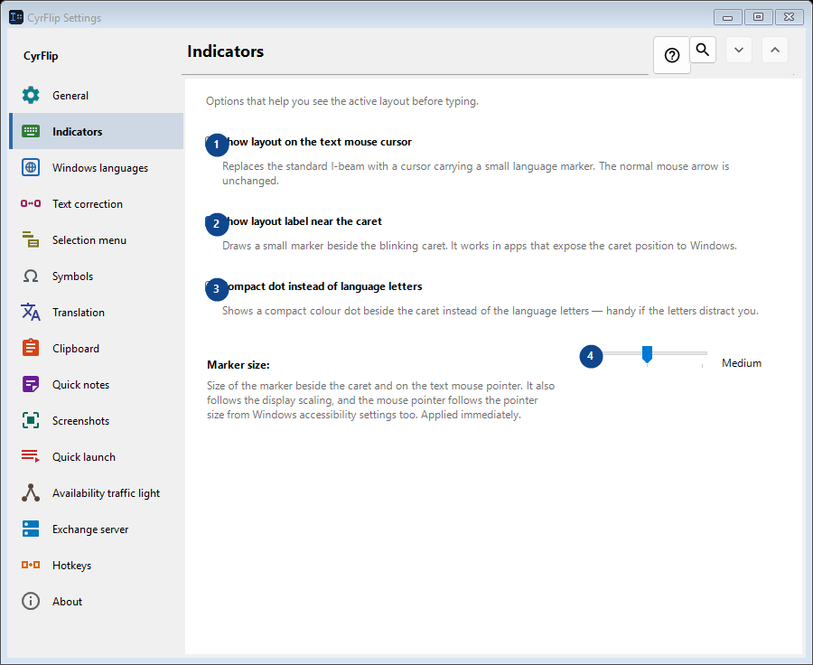
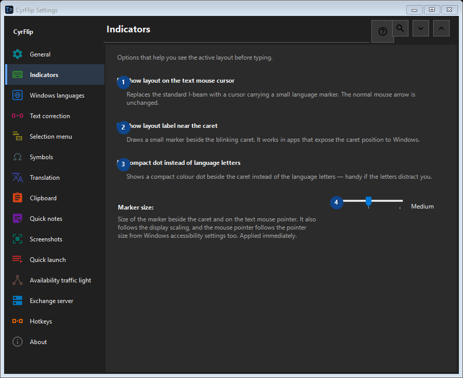

Indicators
What this is for
Options that help you see the active layout before typing.


In this order
Settings apply immediately. There is no required order; use the groups below.
The elements
1. Show layout on the text mouse cursor
Replaces the standard I-beam with a cursor carrying a small language marker. The normal mouse arrow is unchanged.
Your shortcuts2. Show layout label near the caret
Draws a small marker beside the blinking caret. It works in apps that expose the caret position to Windows.
Your shortcuts3. Compact dot instead of language letters
Shows a compact colour dot beside the caret instead of the language letters — handy if the letters distract you.
Your shortcuts4. Marker size
Choose or enter the value for the adjacent label. Review it before continuing.
Your shortcuts